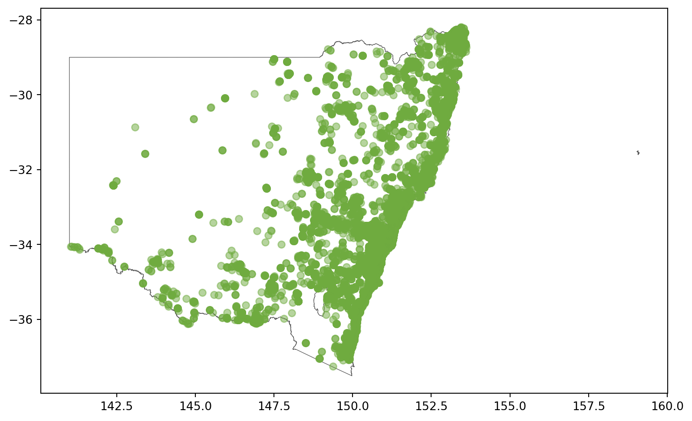
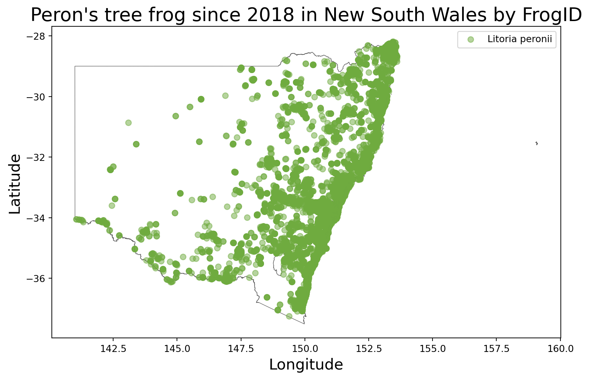

import galah
galah.galah_config(atlas = "Australia", email = "amanda.buyan@csiro.au")How to Make a Map using ALA data
Maps are a useful way to represent data, especially if you want to see where Atlas data is. It is also helpful, when cleaning your data, to spot errors (say, one of your occurrences is in the ocean when it is a terrestrial species). In this post, we will use Python, the galah-python,geopandas and matplotlib packages to create a map.
First, we need to set up our environment for galah-python. To do this, we need to use the galah_config function to set two galah-specific variables: 1. atlas to Australia (to get ALA data), and 2. email to your ALA-registered email. To register for the ALA, visit the ALA’s Create Account page.
Now, we will use an example query about Peron’s tree frog:
Download record counts of Peron’s tree frog since 2018 in New South Wales by FrogID
Below, we have added comments to show the user what parts of this code correspond to the query above.
galah.atlas_counts( # *Download record counts*
taxa="litoria peronii", # *of Peron's tree frog*
filters=["year>=2018", # *since 2018*
"cl22=New South Wales", # *in New South Wales*
"dataResourceName=FrogID"] # *by FrogID*
)| totalRecords | |
|---|---|
| 0 | 27647 |
Now that we know we expect ~28,000 counts of Peron’s tree frog, we can download the occurrence records associated with this query.
galah.atlas_occurrences(
taxa="litoria peronii",
filters=["year>=2018",
"cl22=New South Wales",
"dataResourceName=FrogID"]
)| recordID | catalogNumber | taxonConceptID | scientificName | raw_vernacularName | scientificName.1 | taxonRank | vernacularName | kingdom | phylum | ... | day | eventDate | raw_basisOfRecord | basisOfRecord | occurrenceStatus | raw_sex | preparations | informationWithheld | dataGeneralizations | spatiallyValid | |
|---|---|---|---|---|---|---|---|---|---|---|---|---|---|---|---|---|---|---|---|---|---|
| 0 | 0008c41d-fd35-421a-9976-8213ade88ba8 | NaN | https://biodiversity.org.au/afd/taxa/c584f24b-... | Litoria peronii | NaN | Litoria peronii | species | Peron's Tree Frog | Animalia | Chordata | ... | 15 | 2020-12-15T00:00:00Z | Occurrence | OCCURRENCE | PRESENT | male | NaN | NaN | NaN | True |
| 1 | 000c1c20-bec3-4fc3-8d65-3de76961a998 | NaN | https://biodiversity.org.au/afd/taxa/c584f24b-... | Litoria peronii | NaN | Litoria peronii | species | Peron's Tree Frog | Animalia | Chordata | ... | 13 | 2019-01-13T00:00:00Z | Occurrence | OCCURRENCE | PRESENT | male | NaN | NaN | NaN | True |
| 2 | 000e46ad-9ace-437c-ac31-48843f603c9c | NaN | https://biodiversity.org.au/afd/taxa/c584f24b-... | Litoria peronii | NaN | Litoria peronii | species | Peron's Tree Frog | Animalia | Chordata | ... | 28 | 2021-10-28T00:00:00Z | Occurrence | OCCURRENCE | PRESENT | male | NaN | NaN | NaN | True |
| 3 | 001229c0-4c48-486f-8d5d-5ddfe7420756 | NaN | https://biodiversity.org.au/afd/taxa/c584f24b-... | Litoria peronii | NaN | Litoria peronii | species | Peron's Tree Frog | Animalia | Chordata | ... | 28 | 2021-10-28T00:00:00Z | Occurrence | OCCURRENCE | PRESENT | male | NaN | NaN | NaN | True |
| 4 | 0014b8ff-ddd5-4a24-b7ee-cb57c62ba2d2 | NaN | https://biodiversity.org.au/afd/taxa/c584f24b-... | Litoria peronii | NaN | Litoria peronii | species | Peron's Tree Frog | Animalia | Chordata | ... | 10 | 2018-11-10T00:00:00Z | Occurrence | OCCURRENCE | PRESENT | male | NaN | NaN | NaN | True |
| ... | ... | ... | ... | ... | ... | ... | ... | ... | ... | ... | ... | ... | ... | ... | ... | ... | ... | ... | ... | ... | ... |
| 27642 | fff85846-94f6-4285-b520-219a574beaa6 | NaN | https://biodiversity.org.au/afd/taxa/c584f24b-... | Litoria peronii | NaN | Litoria peronii | species | Peron's Tree Frog | Animalia | Chordata | ... | 8 | 2021-11-08T00:00:00Z | Occurrence | OCCURRENCE | PRESENT | male | NaN | NaN | NaN | True |
| 27643 | fffa5afb-2388-4ec2-937c-d73c104352d3 | NaN | https://biodiversity.org.au/afd/taxa/c584f24b-... | Litoria peronii | NaN | Litoria peronii | species | Peron's Tree Frog | Animalia | Chordata | ... | 16 | 2019-11-16T00:00:00Z | Occurrence | OCCURRENCE | PRESENT | male | NaN | NaN | NaN | True |
| 27644 | fffb30c7-cee4-4d5d-8c36-b15721ac4565 | NaN | https://biodiversity.org.au/afd/taxa/c584f24b-... | Litoria peronii | NaN | Litoria peronii | species | Peron's Tree Frog | Animalia | Chordata | ... | 21 | 2020-10-21T00:00:00Z | Occurrence | OCCURRENCE | PRESENT | male | NaN | NaN | NaN | True |
| 27645 | fffba153-a597-4ed2-a325-8f9d3e567ae9 | NaN | https://biodiversity.org.au/afd/taxa/c584f24b-... | Litoria peronii | NaN | Litoria peronii | species | Peron's Tree Frog | Animalia | Chordata | ... | 18 | 2021-09-18T00:00:00Z | Occurrence | OCCURRENCE | PRESENT | male | NaN | NaN | NaN | True |
| 27646 | fffd964f-475f-4a9d-9763-5654fa842aee | NaN | https://biodiversity.org.au/afd/taxa/c584f24b-... | Litoria peronii | NaN | Litoria peronii | species | Peron's Tree Frog | Animalia | Chordata | ... | 23 | 2021-10-23T00:00:00Z | Occurrence | OCCURRENCE | PRESENT | male | NaN | NaN | NaN | True |
27647 rows × 55 columns
As we can see, we get a lot of columns by default from the ALA! To see which columns that are available, we can type the following code:
frogs = galah.atlas_occurrences(
taxa="litoria peronii",
filters=["year>=2018",
"cl22=New South Wales",
"dataResourceName=FrogID"]
)
frogs.columnsIndex(['recordID', 'catalogNumber', 'taxonConceptID', 'scientificName',
'raw_vernacularName', 'scientificName.1', 'taxonRank', 'vernacularName',
'kingdom', 'phylum', 'class', 'order', 'family', 'genus', 'species',
'subspecies', 'dataResourceUid', 'institutionUid', 'institutionName',
'collectionUid', 'collectionName', 'dcterms:license', 'institutionCode',
'collectionCode', 'raw_locality', 'raw_decimalLatitude',
'raw_decimalLongitude', 'raw_geodeticDatum', 'decimalLatitude',
'decimalLongitude', 'coordinatePrecision',
'coordinateUncertaintyInMeters', 'country', 'stateProvince', 'cl959',
'cl21', 'cl1048', 'minimumElevationInMeters',
'maximumElevationInMeters', 'minimumDepthInMeters',
'maximumDepthInMeters', 'individualCount', 'recordedBy', 'year',
'month', 'day', 'eventDate', 'raw_basisOfRecord', 'basisOfRecord',
'occurrenceStatus', 'raw_sex', 'preparations', 'informationWithheld',
'dataGeneralizations', 'spatiallyValid'],
dtype='object')Since we only want to make a map using the species name, latitude and longitude, we can specify the data columns we want by using the fields argument, and using the column names scientificName,decimalLatitude, and decimalLongitude.
galah.atlas_occurrences(
taxa="litoria peronii",
filters=["year>=2018",
"cl22=New South Wales",
"dataResourceName=FrogID"],
fields=["scientificName","decimalLatitude","decimalLongitude"]
)| scientificName | decimalLatitude | decimalLongitude | |
|---|---|---|---|
| 0 | Litoria peronii | -32.383000 | 149.261000 |
| 1 | Litoria peronii | -33.800793 | 151.162256 |
| 2 | Litoria peronii | -31.818230 | 151.909507 |
| 3 | Litoria peronii | -31.261342 | 152.910330 |
| 4 | Litoria peronii | -34.274096 | 150.630698 |
| ... | ... | ... | ... |
| 27642 | Litoria peronii | -33.766382 | 150.975866 |
| 27643 | Litoria peronii | -33.739746 | 151.129883 |
| 27644 | Litoria peronii | -34.739682 | 150.549839 |
| 27645 | Litoria peronii | -33.804783 | 151.165317 |
| 27646 | Litoria peronii | -29.361663 | 151.144758 |
27647 rows × 3 columns
Now that we have the data we want, it is time to make a map. First, download the latest state and territory boundaries from the Australian Bureau of statistics (link here). After downloading it, put it in a folder you can easily access and then unzip the zip file you downloaded to find a shapefile titled STE_2021_AUST_GDA94.shp. This is what you need to complete the map.
from matplotlib import pyplot as plt
import geopandas as gpd
# Get Peron's tree frog occurrences
frogs = galah.atlas_occurrences(
taxa="litoria peronii",
filters=["year>=2018",
"cl22=New South Wales",
"dataResourceName=FrogID"],
fields=["scientificName","decimalLongitude","decimalLatitude"]
)
# Get Australian state and territory boundaries
states = gpd.read_file("STE_2021_AUST_GDA94.shp")
# Change Coordinate Reference System (CRS) of the shape file and plot New South Wales
states = states.to_crs(4326)
states[states["STE_NAME21"] == "New South Wales"].plot(edgecolor = "#5A5A5A", linewidth = 0.5, facecolor = "white", figsize = (12,6))<Axes: >
Now, we will add our species data to the map.
ax = states[states["STE_NAME21"] == "New South Wales"].plot(edgecolor = "#5A5A5A", linewidth = 0.5, facecolor = "white", figsize = (12,6))
plt.scatter(frogs['decimalLongitude'],frogs['decimalLatitude'], c = "#6fab3f", alpha = 0.5)<matplotlib.collections.PathCollection at 0x17889ff10>
For some final touches (to make the map prettier), we can add labels, titles and legends, as well as save the figure.
ax = states[states["STE_NAME21"] == "New South Wales"].plot(edgecolor = "#5A5A5A", linewidth = 0.5, facecolor = "white", figsize = (12,6))
plt.scatter(frogs['decimalLongitude'],frogs['decimalLatitude'], c = "#6fab3f", alpha = 0.5, label = "Litoria peronii")
plt.legend()
ax.set_xlabel("Longitude",fontsize=16)
ax.set_ylabel("Latitude",fontsize=16)
plt.title("Peron's tree frog since 2018 in New South Wales by FrogID",fontsize=20)
plt.savefig("perons_tree_frog_nsw.png")